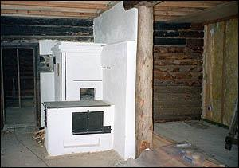
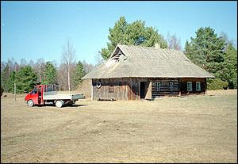
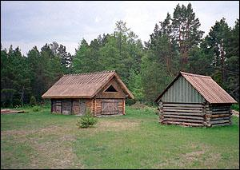
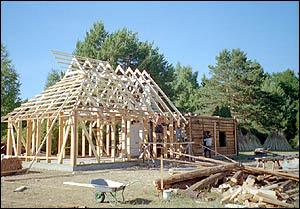
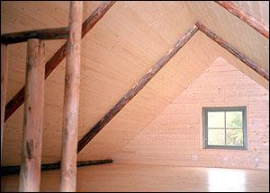
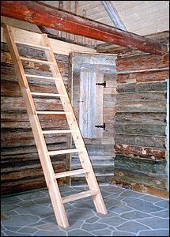

Vaata lähemalt ja pilte
Looduslikult kaunis kohas asuva Lõuka talu hoonetest olid säilinud aidahoone, katuseta hõre palkhoone ja vett läbilaskva vana rookatusega elumaja. Elumajas oli säilinud kasutamisväärtuse minetanud suur leivaahi, pae- ja graniitkivist korsten ning algupärane tahmunud parrepalkidega lagi. Need hoone väärtuslikud osad on omanäolisuse säilitajad ja objekti identiteedi kandjad.
Uuringu tulemusena selgus, et aidahoonet õnnestub säilitada. Selleks paigaldati uus katus, metsakuivadest palkidest ehitati kinni aida lahtised otsaseinad, muldpõranda asemele tehti laudpõrand, esikuruumi tuli põrandaküttega kivipõrand lihvitud paeplaatidest. Katusealune osa kaeti laudvoodriga, eksponeerides samas vana sarikapalki.
Hõredale palkhoonele paigaldati uus laudkatus. Elumajast õnnestus säilitada kolmandik palkseintest, osaliselt vana laudpõrandat ja tahmunud parrepalkidest lagi. Ennistati vana leivaahi koos massiivse korstnaga. Rajati uus elektrisüsteem ja sanitaarsõlm. Välisseina pandi uus soojustus, mis võimaldab hoonet aastaringselt kasutada. Materjalidest kasutati lubikrohvi ja lubivärve, vanu põletatud savitelliseid, Rootsis toodetud raudvitrioli välisfassaadi värvimiseks, linaõli ja puutõrva.
Austades muutust, mida objekt endas ajateljel edasi liikudes kannab, õnnestus säilitada talukompleksi omanäolisus, ühendades selle mälestus- ja kasutusväärtuse.





